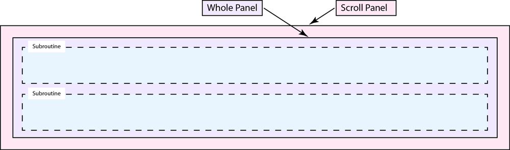
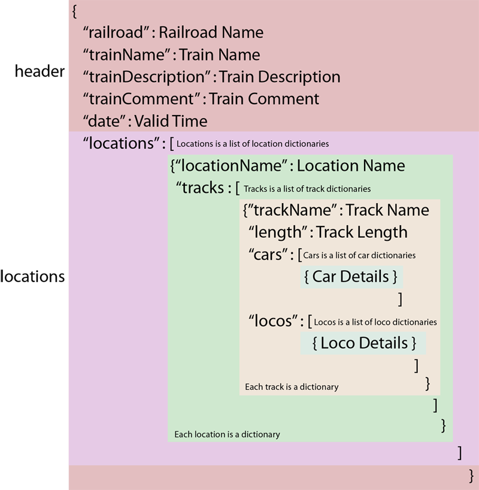

Das Plugin Pattern Scripts für JMRI ist eine Reihe von Unterprogrammen für JMRI Operations Pro. Die Verwendung dieses Plugins ist in der folgenden Liste von Videos dokumentiert.
Diese Videos sind in englischer Sprache aufgenommen.
Wie man dieses Plugin zu JMRI hinzufügt
Wie man dieses Plugin übersetzt
So richten Sie dieses Plugin ein
Wie man dieses Plugin verändert
Track Pattern Subroutine - Demonstration auf einer Werft
Track Pattern Subroutine - Demonstration in der Industrie
o2o, die Unterroutine ops to ops für TrainPlayer©
The j Plus subroutine adds enhanced railroad detail to reports generated by both JMRI and this plugin.
Data for this subroutine is entered into the text boxes or if the TrainPlayer subroutine is activated, the additional railroad detail is imported from the TrainPlayer layout.
The enhanced fields are as follows:
Operating Railroad Name - This is railroad that owns or operates the tracks being modeled. Any name can be entered such as 'PRR' or 'BN UPRR Joint' or 'G&D'.
Operational Territory - This is the railroad's name for the part being modeled, such as 'Long Beach Intermodal Terminal' or 'Salem Glass Works Branch'.
Location - Where the the railroad is located, such as 'Oakland, CA' or 'The Bronx, New York'.
Year Modeled - Which year the model railroad is based on, this is a mirror of 'JMRI/OperationsPro/Settings/Year Modeled'.
Das Unterprogramm "Track Pattern" kann Pattern-Berichte für Tracks an einem einzigen Ort erstellen. Außerdem können die Fahrzeuge innerhalb eines Ortes von einem Gleis zum anderen bewegt werden, and optionally, if a car is moved onto a spur, the schedule for that spur can be applied.
Die folgende Tabelle zeigt die Codestruktur dieses Plugins.

OperationsPatternScripts.MainScript.View.makePatternScriptsWindow()
">OperationsPatternScripts.PatternTracksSubroutine.Controller.makeSubroutinePanel()

OperationsPatternScripts.ControllerSetCarsForm.CreatePatternReportGui.makeFrame()

Die Musterberichte und TrainPlayer©-Exporte beginnen alle mit der Erstellung einer JSON-Datei. Die Datei wird von diesem Plugin erstellt und im Falle von TrainPlayer©-Manifestexporten wird das JSON durch Modifizierung des von JMRI generierten Manifest-JSON erstellt. Alle JSON-Dateien werden in den Ordner jsonManifests geschrieben und folgen dem abgebildeten Format:
">Jedes JMRI-Profil erhält seine eigene Konfigurationsdatei mit dem Namen PatternConfig.json.
Es befindet sich im Ordner "Operationen" und wird verwendet, um benutzerdefinierte Einstellungen für jedes Profil vorzunehmen und Benutzereingaben aufzuzeichnen.
Die Beschreibung der einzelnen Elemente ist blau.
Vom Benutzer bearbeitbare Tasten sind in grüner Farbe beschrieben.
Um die grün markierten Werte wurde eine Art Schutzleiste gelegt, aber auch so kann dieses Plugin nicht jeden Fehler abfangen.
In einigen Fällen kann das Plugin abstürzen. Wenn das passiert, drücken Sie die Schaltfläche 'Restart from PatternConfig Backup' und das Plugin wird die letzte gute PatternConfig.json-Datei als neuen Startpunkt verwenden.
In anderen Fällen, wenn ein Fehler bei der Bearbeitung der Datei PatternConfig.json gemacht wird, ersetzt das Plugin diese durch die Standarddatei, und der Benutzer muss von vorne beginnen.
Im schlimmsten Fall löschen Sie einfach die Datei "Pattern Config.json" und das Plugin erstellt eine neue Datei.
"CD": {
"CP": { Farbpalette
"BLANCH": { Jede dieser Farben kann geändert werden
"A": 255, Alpha-Wert
"B": 225, Blauer Wert
"D": Light grey, Vage Beschreibung
"G": 225, Grüner Wert
"R": 225 Roter Wert
},
"DUST": {
"A": 255,
"B": 218,
"D": "Light tan",
"G": 242,
"R": 252
},
"FADED": {
"A": 255,
"B": 245,
"D": "Light purple",
"G": 225,
"R": 237
},
"LICHEN": {
"A": 255,
"B": 244,
"D": "Light green",
"G": 255,
"R": 236
},
"PALE": {
"A": 255,
"B": 250,
"D": "Light blue",
"G": 243,
"R": 237
},
"PETAL": {
"A": 255,
"B": 224,
"D": "Light red",
"G": 208,
"R": 240
}
},
"locoColor": "FADED", "" specifies no color will be used
"carColor": "DUST",
"alertColor": "PETAL"
},
"CP" : {
"TS" : { Translation Services
"UD" : "useDeepL",
"UX" : "Some Other Translation Service"
},
"TC" : "UD", Übersetzungsauswahl
"BT" : ["Plugin", "Help"], Bundle-Ziele, Basisname für jedes Bundle
"AP" : true, Schaltfläche "Hinzufügen" zum Panel Pro-Rahmen, Plugin wird nicht angezeigt, ist aber dennoch aktiviert
"SE" : "utf-8", Standardkodierung
"SI": [ Skript Enthält
{
"PatternTracksSubroutine": true Fügen Sie dieses Unterprogramm in die Systemsteuerung ein
},
{
"o2oSubroutine": false Fügen Sie dieses Unterprogramm in die Systemsteuerung ein
}
],
"PH" : 220, Standard-Panelhöhe
"PW" : 1500, Standard-Panelbreite
"PX" : 0, Plugin X location
"PY" : 0, Plugin Y location
"OC" : true, Systemkonsolenfenster öffnen
"RV" : 20220205 Revisionskontrolle
},
Diese nicht bearbeiten
"PT" : {
"AD" : [ All Divisions (written by this plugin)
],
"AL" : [ Alle Standorte (von diesem Plugin geschrieben)
],
"PL" : "", Pattern Location (von diesem Plugin geschrieben)
"PT" : { Pattern-Tracks (geschrieben von diesem Plugin)
},
"PA" : false, Flagge "Nur Yard Tracks" (vom Benutzer gesetzt, von diesem Plugin geschrieben)
"PI" : false, Track Length Flag ignorieren (vom Benutzer gesetzt, von diesem Plugin geschrieben)
"AS" : true, Flag "Zeitplan" anwenden (vom Benutzer gesetzt, von diesem Plugin geschrieben)
"TI" : false, TrainPlayer Include flag (vom Benutzer gesetzt, von diesem Plugin geschrieben)
"PW" : 260, Musterbreite
"PH" : 16, Musterhöhe
"RM": 8, Reihenmultiplikator
"RM" : {
"DS" : "*No Waybill", Bestimmungskennzeichen
"DT" : "*Not Consigned", Ziel Gleisbezeichner
"FD" : "*Via Staging", Endzielbezeichnung
"FT" : "*Any Line", Endziel Gleisbezeichner
"SL": [ Lokomotiven sortieren
"Model"
],
"SC": [ Autos sortieren
"Load Type",
"FD&Track"
],
"AW": { Attribut Breite
"Input": 6,
"Model": 5,
"Road" : 5,
"Number" : 7,
"Type" : 6,
"Length" : 7,
"Weight" : 7,
"Load" : 6,
"Load Type" : 5,
"Loco Type" : 18,
"Owner" : 20,
"Consist" : 8,
"Hazardous" : 10,
"Color" : 6,
"Kernel" : 7,
"Kernel Size" : 12,
"Owner" : 6,
"Track" : 6,
"Location" : 9,
"Destination" : 15,
"Dest&Track" : 30,
"Final Dest" : 11,
"FD&Track" : 21,
"Comment" : 15,
"SetOut Msg" : 12,
"PickUp Msg" : 12,
"RWE" : 10,
" " : 0
}
},
Die Unterroutine ops to ops (o2o) ist eine Gruppe von Hilfsprogrammen, die JMRI Operations Pro als Operations-Engine für TrainPlayer© dienen. Die Idee ist, die Möglichkeiten der TrainPlayer©-Funktion Advanced Ops um die betriebliche Flexibilität von Operations Pro zu erweitern, und gleichzeitig die mühsame Synchronisierung von zwei Datenbanken zu vermeiden.
"RD" :{ Railroad Details, optional part of the TrainPlayer layout.
"RR" : "", Parent railroad, the one that owns the tracks.
"OP" : "", Name of the particular operation being modeled.
"LO" : "", Location of the prototype.
"YR" : "", Calendar year being modeled.
"DV" : [], List of railroad divisions for this layout, comma seperated.
"SC" : "" Model railroad scale.
},
"o2o" : {
"PC": [ Liste der TrainPlayer-Wagencodes für Personenwagen.
"B",
"BE",
"BH",
"BM",
"BMR",
"BMT",
"BP",
"BR",
"BX",
"CA",
"CS",
"D",
"DA",
"DB",
"DC",
"DL",
"DO",
"DP",
"DPA",
"MA",
"MB",
"MR",
"P",
"PA",
"PAS",
"PB",
"PBC",
"PBO",
"PC",
"PL",
"PO",
"PS",
"PSA"
],
"CC" : [ Liste der TrainPlayer-Wagencodes.
"N",
"NM",
"NE"
],
"CFL" : [ Core File List
"OperationsCarRoster",
"OperationsEngineRoster",
"OperationsLocationRoster"
],
"SR" : { Scale Rubric JMRI Modelleisenbahn Maßstab.
"Z" : 1,
"N" : 2,
"TT" : 3,
"HOn3" : 4,
"OO" : 5,
"HO" : 6,
"Sn3" : 7,
"S" : 8,
"On3" : 9,
"O" : 10,
"G" : 11
},
"RF" : { Report Files Namen der TrainPlayer-Layout-Exportdateien.
"TRL" : "TrainPlayer Report - Locations.txt",
"TRI" : "TrainPlayer Report - Industries.txt",
"TRR" : "TrainPlayer Report - Rolling Stock.txt"
},
"TO" : { Tweek Operations Anpassungen der Betriebseinstellungen.
"SME" : true, setMainMenuEnabled
"CWS" : true, setCloseWindowOnSaveEnabled
"SBA" : true, setBuildAggressive
"SIA" : true, setStagingTrackImmediatelyAvail
"SCT" : "ARR Codes", setCarTypes
"TNB" : true, setStagingTryNormalBuildEnabled
"SME" : true, setManifestEditorEnabled
"PUC" : "Road", "Number", "Type", "Load Type", "Load", "Destination", setPickupManifestMessageFormat
"SOC" : "Road", "Number", "Type", "Load Type", "Load", "Destination", setDropManifestMessageFormat
"MC" : "Road", "Number", "Type", "Load Type", "Load", "Final Dest", setLocalManifestMessageFormat
"PUL" : "Road", "Number", "Model", "Consist", "Destination", setPickupEngineMessageFormat
"SOL" : "Road", "Number", "Model", "Consist", "Destination", setDropEngineMessageFormat
},
"SM" : {
"SCL" : true, setAddCustomLoadsAnySpurEnabled
"RCL" : true, setRemoveCustomLoadsEnabled
"LEE" : true, setLoadEmptyEnabled
},
"TR" : { Type Rubric TrainPlayer- und JMRI-Gleisarten angleichen.
"industry": "Spur",
"interchange": "Interchange",
"staging": "Staging",
"class yard": "Yard",
"XO reserved": "Spur"
}